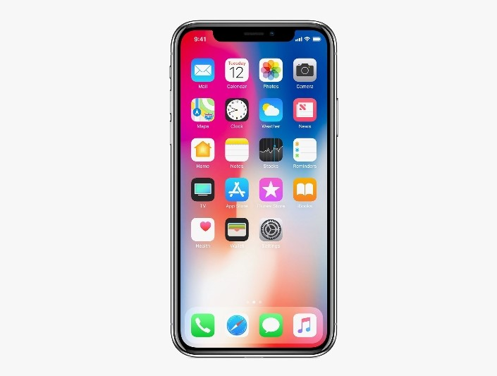

My Portfolio

NEO-Commerce Website
A well responsive online store including cart and payment.

Design for Mobile
This is a user interface design for a fitness traching mobile application.

Blok Platform
A custom platform for bloging with content management system.

Restaurant Website
Online menu and reservation system for a local restaurant.